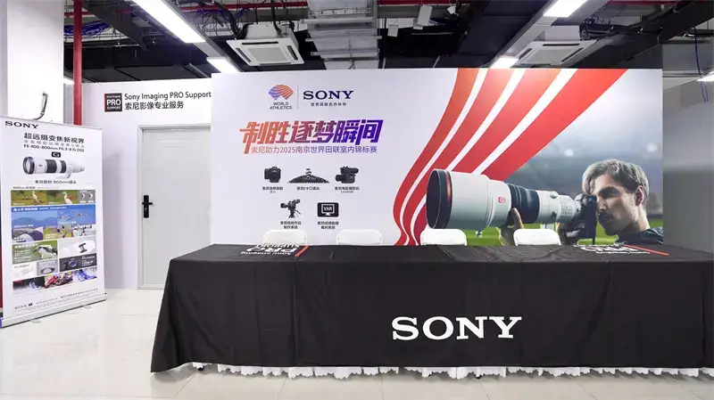
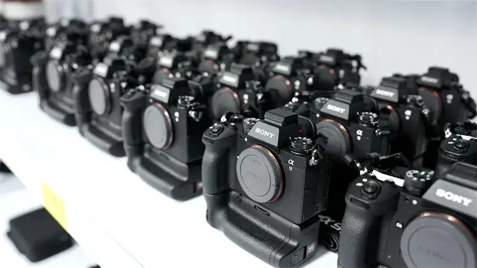
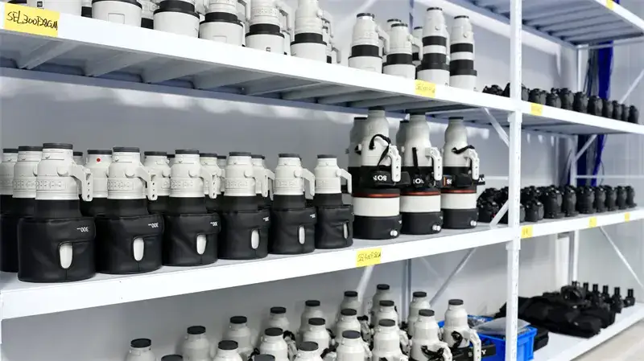
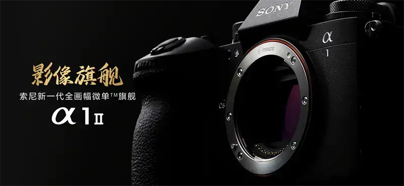

As the 2025 Nanjing World Athletics Indoor Championships opened, the world turned its eyes to this historic city. In this peak contest of speed and power, Sony Imaging PRO Support set sail again. From March 20 to 24, it gives full support to registered photographers around the world, and helps them catch every decisive moment on the track.
For the event, Sony prepared more than 100 full-frame flagship cameras, including the Alpha 1 II and Alpha 9 III, and 200 GM lenses for media use. Besides lending gear on site, the service center also offers battery charging and equipment cleaning. It works to keep sports photography running smoothly.

On-site services
1. On-site gear lending
Each registered media reporter may borrow up to 2 camera bodies. Lenses are unlimited, and accessories are given as needed. (Availability depends on the gear on hand at the service center.)
2. Equipment cleaning and care
The site offers unlimited cleaning of Sony imaging gear, to keep the equipment in good condition.
3. Battery and charging support
The site offers spare batteries and charging, so photographers can shoot without worry.
*Note: bring your event registration pass to check in.

Service hours and location
Sony Imaging PRO Support center address: inside the media center of the athletics hall at the Nanjing Sports Training Center (99 Chengnanhe Road, Jiangpu Subdistrict, Pukou District, Nanjing).
Sony Imaging PRO Support center open hours: March 20-24, 2025Product lending hours: March 20-23, 2025Final return time: March 23, 2025, 24:00

The Nanjing track is full of challenges. There is the instant burst of sprinters, the airborne form of high jumpers, and the teamwork of relay races. Every frame must be caught with precision. Sony's flagship mirrorless cameras, the Alpha 1 II and Alpha 9 III, together with a large native lens lineup that covers many focal lengths, become a sharp tool for freezing great moments. They show strong advantages in sports photography.
The Alpha 1 II has a 50.1-megapixel stacked CMOS sensor. It supports high-speed blackout-free burst at about 30 frames per second. It easily catches the detail of high-explosive events such as sprinting and long jump.
The Alpha 9 III is a creative mirrorless camera that supports burst at about 120 frames per second. Together with AI autofocus, it locks onto athletes in high-speed events such as hurdles and relays.
More than 75 native E-mount lenses cover the full range, from the ultra-wide FE 16-35mm F2.8 GM to the super-telephoto FE 400-800mm F6.3-8 G OSS. They meet the many shooting needs of the track.
The pre-shoot feature records the second before you press the shutter. It fully solves the pain point of hands that cannot keep up with the pace of the event. In long jump, photographers can go back to the athlete's preparatory move before takeoff, and catch the perfect airborne moment.

On the Nanjing track, Sony imaging gear is not only a recording tool. It carries both technology and passion. Whether it is the 0.01 seconds of a sprint finish or the fine margin over the high jump bar, Sony honors precision with excellence, and freezes every moment of self-breakthrough forever.
While the center is open, Sony invites all event photographers to the Sony Imaging PRO Support center to try the professional service, and to witness the bright moments together.
From the ice and snow venues of international sports to the track of the Nanjing World Athletics Indoor Championships, Sony always supports global sports imaging with technology. In future, we will keep exploring how AI autofocus, high-speed burst, and other technology can go deeper into sports events, and create more moments that move photographers and viewers.

For more on Sony's professional imaging service, visit the official site: Sony Imaging PRO Support